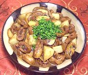
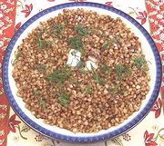

Pictorial Menu
Musica Donavania, July 26 2014 - 20th Century Russians
This event was held at the Altadena location, so this menu includes only the two dishes that were contributed by the La Crescenta location.
Click on Picture for Recipe

Kidneys in Madeira Sauce

Buckwheat Kasha